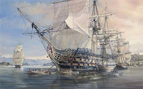
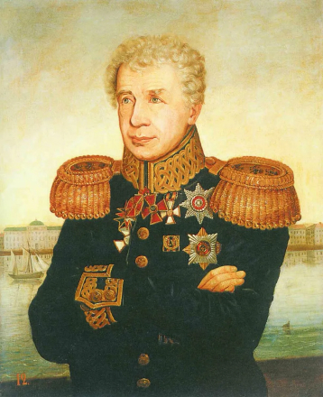
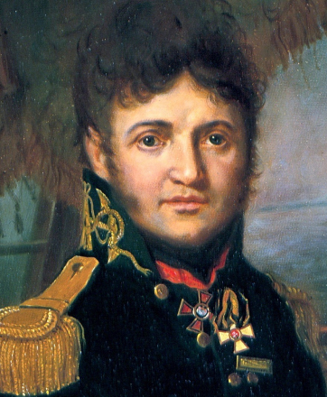
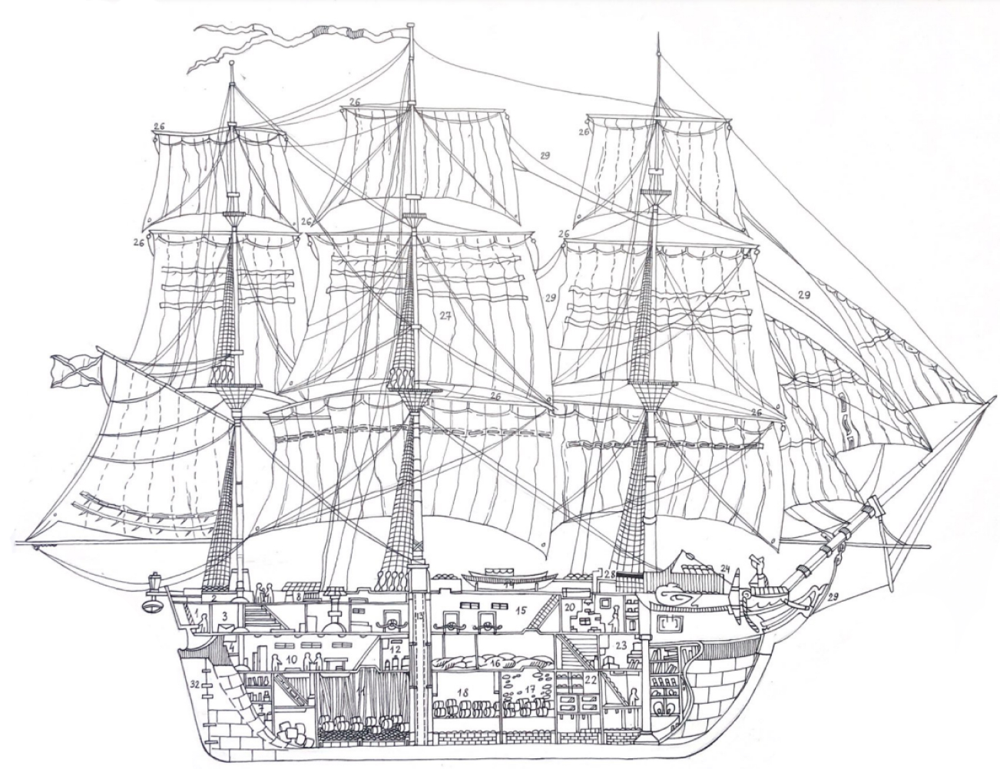
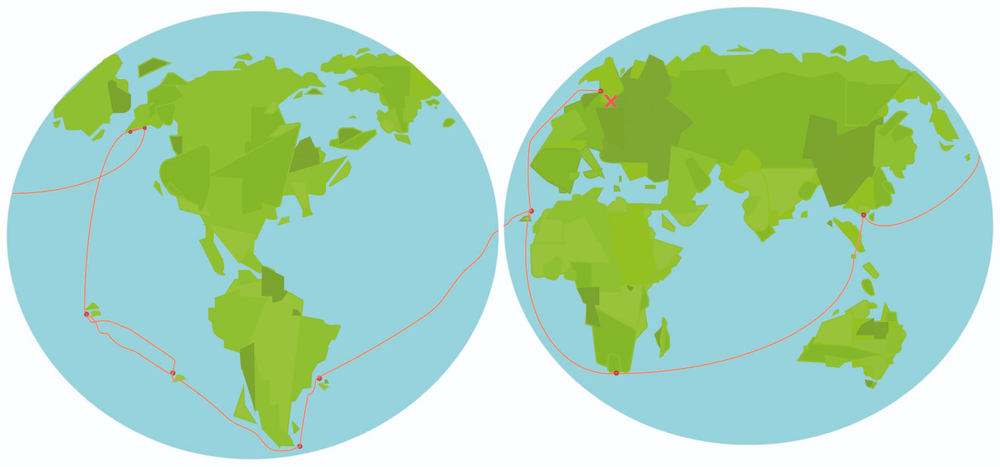

История
В 1803 году под командованием Ивана Крузенштерна и Юлия Лисянского на кораблях “Надежда” и “Нева” было организовано первое русское кругосветное путешествие. Начав свое путешествие в Санкт - Петербурге, экипаж кораблей под командованием И.Крузенштерна и Ю.Лисянского, проплыли весь земной шар всего за 3 года
Биография капитанов
Иван Федорович Крузенштерн
Крузенштерн Иван Фёдорович (1770—1846), мореплаватель, адмирал (1842 г.) Родился 19 ноября 1770 г. в Эстонии. Окончил Морской кадетский корпус в Петербурге (1788 г.).Участвовал в сражениях против шведов. Затем служил добровольцем в английском флоте: воевал с французами в Атлантическом океане у берегов Северной Америки, ходил к Антильским островам, в Индию и даже в Южный Китай.Организовать собственную экспедицию Крузенштерну удалось не сразу: первый проект (1799 г.) правительство Павла I отклонило. Зато второй (1802 г.) был принят Александром I. Плавание продолжалось больше трёх лет: корабли «Надежда» и «Нева» вышли из Кронштадта в конце июля 1803 г., пересекли Атлантический, затем Тихий океан, исследовали Дальний Восток и через Индийский океан и Атлантику вернулись домой 19 августа 1806 г.В том же году Крузенштерна избрали почётным членом Петербургской академии наук.На Дальнем Востоке мореплаватель исследовал восточное, северное и северо-западное побережье Сахалина и составил подробные карты.
Юрий Федорович Лисянский
Юрий Федорович Лисянский (1773-1837) родился 13 августа 1773 года в городе Нежине (Украина) в дворянской семье. В 1786 году начал службу мичманом на Балтийском флоте, участвовал в сражениях русско-шведской войны 1788-1790 гг. в 1789 году. В 1803 году совершил поездку в Лондон для покупки двух шлюпов для первого кругосветного плавания русских моряков. В 1793 году Лисянский совершил несколько морских путешествий. Он служил в британском флоте, совершил несколько морских путешествий с французским флотом и пиратами. В марте 1798 года Лисянский вернулся в Россию и в звании капитан-лейтенанта служил на кораблях Балтфлота. В 1804 году он начал самостоятельное плавание, направляясь к северо-западному побережью Америки. Он захватил русский торговый город Новоархангельск и вновь захватил Новоархангельск. Вышел в отставку в 1805 году и умер в Санкт-Петербурге в 1804 году.
Описание корабля
Карта пути
Санкт - Петербург
С Санкт-Петербурга началось Первое русское кругосветное путешествие, здесь же оно и закончилось
Африка
Здесь экспедиция миновала экватор в половине одиннадцатого ночи 26 ноября на 24° 20' з. д. На обоих судах устроили парад с артиллерийским салютом.
Бразилия
Здесь на корабле «Нева» заменили фок- и грот-мачты, что задержало экспедицию в Бразилии на долгое время
мыс Горн
По плану экспедиции мыс Горн надлежало обогнуть в январе. Главной проблемой была нехватка пресной воды, которой должно было хватить на 4 месяца. Поэтому с 7 февраля Крузенштерн ввёл жёсткое рационирование: две кружки воды в день на человека (считая сюда варку пищи и чая)
Острова Южной Америки
25 марта в штормовую погоду шлюпы «Надежда» и «Нева» окончательно потеряли друг друга из вида. Поскольку ближайшей обитаемой сушей был Вальпараисо, находившийся в 1000 морских миль к востоку, Лисянский принял решение идти на остров Пасхи
Острова Южной Америки
Чтобы не создавать инцидентов учитывая, что на там процветал каннибализм, Крузенштерн и Лисянский запрещали одиночное посещение берега, матросов и учёных пускали организованными группами под командой офицеров.
Аляска
Главные задачи этого этапа экспедиции решал приказчик Российско-Американской компании Николай Коробицын, который должен был взять на шлюп меха для реализации в Китае. «Нева» доставила из Петербурга товаров на 310 000 рублей и приняла мехов и моржовой кости на 440 тысяч.
Азия
На рейде Макао бросили якорь в темноте, в семь часов вечера 20 ноября. Здесь чуть не возникло недоразумения: «Надежда» шла под новым коммерческим флагом, полученным фельдъегерской почтой на Камчатке — девятиполосным, — и англичане приняли судно за испанское и были готовы захватить его
мыс Доброй Надежды
15 апреля «Надежда» разлучилась с «Невой», причём Крузенштерн понял, что это было сознательным решением Лисянского, взявшего другой курс